189 — Modelado de amenazas y arquitectura de confianza cero
Parte: 15 — Arquitectura de sistemas e ingeniería de requisitos
Nivel: intermedio-avanzado · Horas estimadas: 4
Laboratorio: security · Estado: EXECUTABLE_CORE
🎯 Propósito
Modelar amenazas de forma que produzca decisiones y no un documento, y traducir «confianza cero» de eslogan a arquitectura concreta. La clase da el método de modelado en cuatro preguntas, la clasificación que evita olvidar categorías enteras, y la parte que casi siempre falta: decidir qué amenazas se aceptan sin mitigar, por escrito y con nombre, porque un modelo que mitiga todo no se ha usado nunca.
📚 Resultados de aprendizaje
Al finalizar podrás:
- Modelar amenazas con las cuatro preguntas y un diagrama de flujo de datos.
- Clasificar amenazas por categoría para no olvidar familias enteras.
- Traducir confianza cero en decisiones de identidad, red y datos.
- Priorizar por alcance y no por probabilidad estimada a ojo.
- Aceptar amenazas por escrito, con nombre, riesgo y fecha de revisión.
🧩 Conceptos centrales
| Concepto | Comprensión verificable |
|---|---|
modelado de amenazas |
Ejercicio estructurado para responder qué puede salir mal y qué se hace al respecto, antes de construir. |
frontera de confianza |
Línea que cruza un dato al pasar a un ámbito con distinto nivel de confianza. Es donde se validan cosas. |
STRIDE |
Clasificación de amenazas: suplantación, manipulación, repudio, revelación, denegación y elevación. |
confianza cero |
Ninguna petición se confía por su origen de red: se autentica, se autoriza y se registra siempre. |
alcance |
Lo que se puede tocar desde un punto comprometido. Es la medida que ordena la prioridad. |
amenaza aceptada |
La que se decide no mitigar, con motivo, quien la acepta y fecha de revisión. |
🧠 Modelo mental
Una arquitectura es un conjunto de decisiones sobre estructuras, interfaces y atributos de calidad, respaldadas por escenarios y evidencia.
Aplicado a esta clase, separa siempre cuatro planos: intención (qué necesita el usuario), configuración (qué declaramos), estado observado (qué existe de verdad) y evidencia (cómo sabemos que cumple). Confundirlos produce diseños que se ven correctos en un diagrama pero fallan al operar.
🗺️ Flujo de razonamiento

📖 Desarrollo
1. Las cuatro preguntas
El modelado de amenazas se convierte en burocracia cuando se plantea como un formulario. Planteado como cuatro preguntas, cabe en una sesión de dos horas y produce decisiones.
1. ¿EN QUÉ ESTAMOS TRABAJANDO?
un diagrama de flujo de datos, no de componentes
→ qué datos, por dónde viajan, dónde se guardan, quién
los toca
→ y sobre todo: DÓNDE ESTÁN LAS FRONTERAS DE CONFIANZA
2. ¿QUÉ PUEDE SALIR MAL?
por elemento y por flujo, con una clasificación que evite
olvidar familias enteras
3. ¿QUÉ VAMOS A HACER?
mitigar · trasladar · eliminar la función · ACEPTAR
4. ¿LO HICIMOS BIEN?
una prueba negativa por cada mitigación ley 22
Y la pregunta 1 merece detalle porque de ella depende todo:
LA FRONTERA DE CONFIANZA está donde cambia quién puede
hacer qué
internet → borde la más evidente
borde → servicio interno
servicio → base de datos
cuenta de producción → cuenta de datos
código propio → biblioteca de terceros
persona → sistema (consola, acceso temporal)
canalización → producción ← la más olvidada clase 108
proveedor externo → nuestro sistema (webhook) ← olvidada también
Y el hallazgo de la clase 182 vuelve aquí:
el webhook de la pasarela era un punto de ENTRADA externo
no dibujado
→ y por tanto no estaba en ningún modelo de amenazas
→ lo que no está en el diagrama no se analiza
Y una regla sobre cuándo hacerlo:
al diseñar, no al terminar
→ un modelo de amenazas después de construir produce una
lista de cosas caras de arreglar
y se revisa cuando
aparece un punto de entrada nuevo
cambia quién puede escribir un dato
se integra un tercero
se cruza una frontera nueva de cuenta o de región
2. Qué puede salir mal, sin olvidar categorías
Preguntar «qué puede salir mal» sin estructura produce siempre las mismas tres respuestas. Una clasificación fuerza a recorrer todas las familias:
S SUPLANTACIÓN alguien se hace pasar por otro
contramedida autenticación fuerte, credenciales de
corta vida, identidad de carga clase 134
T MANIPULACIÓN alguien altera datos o código
contramedida integridad, firma, permisos de escritura,
artefactos firmados clase 106
R REPUDIO alguien niega haber hecho algo
contramedida registro de auditoría inalterable clase 141
I REVELACIÓN alguien ve lo que no debe
contramedida cifrado, permisos, minimización de datos
D DENEGACIÓN alguien impide el servicio
contramedida límites, cuotas, aislamiento clase 186
E ELEVACIÓN alguien obtiene más permisos
contramedida privilegio mínimo, separación de
ámbitos, sin permisos comodín clase 134
Y el modo práctico de aplicarlo sin que dure una semana:
recorre los FLUJOS, no los componentes
por cada flujo que cruza una frontera, pregunta las seis
y apunta solo las que sean plausibles en ESTE sistema
→ un flujo interno entre dos módulos del mismo despliegue
casi nunca merece las seis
→ un flujo que cruza de internet, siempre
Y las amenazas que este programa ha visto materializarse y que casi nunca aparecen en los modelos:
la canalización como vector clase 108
un cambio en la definición del despliegue llega a producción
sin revisión
la credencial de larga duración compartida clase 179
cuatro servicios usando la misma clave de tres años
el trabajo programado sin dueño ley 20
con permisos amplios y sin nadie que lo mire
el acceso de emergencia clase 179
que existe, nadie prueba, y a veces no funciona
el dato copiado a un entorno inferior
la copia de producción en preproducción, sin ofuscar
el proveedor externo que llama de vuelta
webhooks sin verificación de firma
Y una prioridad que ordena mejor que la probabilidad:
no preguntes «¿qué probabilidad tiene?» — nadie lo sabe
pregunta «¿HASTA DÓNDE SE LLEGA desde aquí?»
→ el alcance se mide, la probabilidad se inventa clase 133
→ y reducir alcance protege contra amenazas que no se
han imaginado
3. Confianza cero, en concreto
«Confianza cero» se vende como un producto y es una decisión de arquitectura. Su contenido real cabe en cinco reglas:
1. LA RED NO AUTORIZA
estar dentro no da permiso
→ toda petición se autentica y se autoriza, también las
internas
→ la red sigue importando, pero como contención, no como
autorización clase 135
2. IDENTIDAD DE CARGA, NO CREDENCIAL GUARDADA
cada servicio tiene identidad propia, de corta vida
→ sin claves estáticas compartidas clase 159
3. PERMISO MÍNIMO Y ESPECÍFICO
por recurso y por acción; sin comodines
→ y revisado con permisos concedidos y no usados clase 134
4. CUANTO OCURRE SE REGISTRA Y ES ATRIBUIBLE
quién, qué, cuándo, desde dónde
→ y el registro va a una cuenta donde el comprometido no
puede borrarlo clase 141
5. VERIFICACIÓN CONTINUA
el permiso no es permanente: caduca, se renueva y se revisa
→ acceso temporal con aprobación y caducidad
Y lo que confianza cero no es:
no es «quitar la red privada»
→ la segmentación sigue reduciendo alcance
no es un producto que se compra
no es aplicable de golpe a todo
→ se aplica primero donde el alcance es mayor
Y el orden práctico de adopción, por retorno:
1. eliminar credenciales de larga duración
2. identidad por carga y por consumidor clase 188
3. autorización en cada salto, no solo en el borde
4. registro atribuible fuera del alcance del comprometido
5. segmentación por alcance, empezando por los datos
6. acceso humano temporal y aprobado
Y la comprobación que dice si está de verdad implantado:
toma la credencial de un servicio cualquiera y pregunta
¿a cuántos recursos llega?
¿cuánto dura?
¿queda registrado su uso en un sitio que ese servicio no
puede tocar?
→ si la respuesta a la primera es «a casi todo», lo demás
da igual
4. Lo que se acepta sin mitigar
Un modelo de amenazas donde todo está mitigado no se ha usado: se ha escrito para pasar una revisión.
LAS CUATRO RESPUESTAS POSIBLES
MITIGAR añadir un control
TRASLADAR contrato, seguro, proveedor
ELIMINAR quitar la función que crea la amenaza
← la más infravalorada
ACEPTAR no hacer nada, a propósito
Y «eliminar» merece atención porque resuelve más de lo que parece:
¿hace falta guardar este dato? → si no, no se guarda
¿hace falta que este servicio escriba? → si no, se le quita
¿hace falta exponer este endpoint? → si no, se retira
→ el dato que no existe no se filtra ley 20
La aceptación, escrita:
qué amenaza
qué pasaría si se materializa, en términos de negocio
por qué no se mitiga (coste, complejidad, no compensa)
quién la acepta, con nombre y cargo
en qué fecha se revisa
qué señal la convertiría en prioritaria
Y la última línea es la que hace útil la aceptación:
«se acepta mientras el negocio de empresa sea < 15 % de los
ingresos»
→ convierte una decisión estática en una que se revisa sola
Comprobar que las mitigaciones funcionan, que es la pregunta 4 y la que más se salta:
por cada mitigación, una prueba negativa
¿se puede llegar a producción desde un entorno inferior?
¿se puede sacar un dato a un destino no declarado?
¿se puede desactivar el registro?
¿se puede usar una credencial fuera de su ámbito?
¿se detecta la técnica que decimos detectar? clase 174
y la evidencia del programa: en la clase 179, de 10 pruebas
de seguridad, 3 fallaron; todas correspondían a controles
documentados como implantados ley 22
Y la lista de comprobación de la clase:
☐ hay diagrama de flujo de datos, no de componentes
☐ las fronteras de confianza están dibujadas
☐ están incluidas la canalización y los webhooks externos
☐ cada flujo que cruza frontera se ha recorrido con las seis
categorías
☐ la prioridad se fijó por alcance medido
☐ cada amenaza tiene una de las cuatro respuestas
☐ se consideró eliminar la función, no solo mitigar
☐ las aceptadas tienen nombre, motivo, fecha y señal de revisión
☐ cada mitigación tiene una prueba negativa
☐ las pruebas se han ejecutado, no razonado
☐ ninguna credencial de servicio llega «a casi todo»
Y el cierre que enlaza con la clase siguiente: todas las decisiones de esta parte —fronteras, consistencia, contratos, amenazas aceptadas— necesitan quedar escritas de forma que se puedan revisar y hacer cumplir. Registrarlas y comprobarlas automáticamente es la materia de la clase 190.
🔬 Ejemplo trabajado
El equipo de reservas hace el modelo de amenazas antes de construir. Lo que sigue es la sesión de dos horas: el diagrama con fronteras, las diecinueve amenazas encontradas, las cinco que se aceptaron por escrito y las tres pruebas negativas que fallaron.
El diagrama de flujo de datos, con fronteras:

Y la observación de la sesión:
las fronteras 4, 5 y 7 no estaban en el diagrama de
arquitectura original
→ y de las 19 amenazas encontradas, 8 estaban en esas tres
Las diecinueve amenazas, por frontera y categoría.
FRONTERA 1 · internet → borde
S1 robo de sesión por testigo sin caducidad MITIGAR
D1 saturación de búsqueda desde una IP MITIGAR
I1 enumeración de reservas por identificador MITIGAR
secuencial
T1 manipulación de precio en la petición MITIGAR
FRONTERA 2 · servicio → datos
E1 la credencial de la API permite leer TODAS MITIGAR
las tablas, incluidas las de consentimientos
I2 copia de producción en preproducción sin MITIGAR
ofuscar
R1 no se puede saber qué servicio hizo un MITIGAR
cambio concreto
FRONTERA 3 · nosotros → pasarela
I3 datos de tarjeta en nuestros registros ELIMINAR
D2 la pasarela responde lento y agota hilos MITIGAR
FRONTERA 4 · pasarela → nosotros (webhook) ← no estaba
S2 cualquiera puede llamar al webhook MITIGAR
haciéndose pasar por la pasarela
T2 reproducción de un webhook antiguo MITIGAR
D3 ausencia de webhooks sin detección MITIGAR
FRONTERA 5 · canalización → producción ← no estaba
E2 quien modifica la definición del despliegue MITIGAR
cambia producción sin revisión
T3 artefacto sustituido entre construcción y MITIGAR
despliegue
S3 credencial de despliegue de larga duración MITIGAR
FRONTERA 6 · humano → sistema
E3 acceso permanente de guardia a la base MITIGAR
R2 consulta directa sin registro atribuible MITIGAR
FRONTERA 7 · producción → analítica ← no estaba
I4 el almacén analítico contiene PII completa MITIGAR
y lo consultan 40 personas
I5 exportación a hoja de cálculo sin control ACEPTAR
La prioridad, por alcance medido:
amenaza alcance desde el punto comprometido
E1 11 tablas, incluidas consentimientos y pagos ← máximo
E2 cualquier cambio en producción ← máximo
I4 PII de 2,3 M de clientes ← máximo
S3 despliegue en 4 servicios
E3 lectura y escritura en toda la base
S2 creación de reservas confirmadas falsas
...
D1 degradación de búsqueda ← bajo
Y la decisión de orden que salió de ahí:
se empieza por E1, E2 e I4, no por las más «probables»
motivo el alcance se mide; la probabilidad se inventa
Las mitigaciones más significativas:
E1 la API pasa a tener 3 identidades, una por módulo
reservas → tablas de reservas e inventario
contacto → esquema de contacto
consent. → solo lectura, y escritura solo desde legal
alcance de 11 tablas a 4 clase 183
E2 la definición del despliegue exige 2 revisiones y firma
la identidad de la canalización no puede modificar
políticas ni identidades
despliegue solo desde artefacto firmado clase 106
I4 el almacén analítico deja de recibir PII completa
identificador seudonimizado, sin nombre ni correo
la reidentificación exige una petición con aprobación
consultantes con acceso a PII de 40 a 3
I3 ELIMINAR: nunca se reciben datos de tarjeta
el formulario de pago es de la pasarela; nosotros
recibimos un testigo
→ la amenaza desaparece, no se mitiga
S2 verificación de firma del webhook + marca de tiempo
con ventana de 5 min
T2 identificador de suceso único con registro de vistos
D3 alerta de ausencia de webhooks ley 13
Las cinco amenazas aceptadas, por escrito:
I5 exportación a hoja de cálculo desde el panel interno
si ocurre un empleado se lleva datos agregados sin PII
por qué no el control de exportación cuesta 3 semanas y
bloquea el trabajo de negocio
acepta dirección de datos, María Alonso
revisa en 6 meses
señal si el panel llega a mostrar PII, deja de
aceptarse
D1 saturación de búsqueda desde muchas IP distintas
mitigado parcialmente con límite por IP; el ataque
distribuido no
por qué no el servicio de protección cuesta 900 €/mes;
la búsqueda degradada no impide reservar
acepta dirección de tecnología
revisa si hay un incidente real
R3 los registros de la aplicación se conservan 90 días,
no 365
por qué no coste de almacenamiento
acepta dirección de tecnología
señal si aparece requisito de auditoría, cambia
S4 el socio C sigue usando una credencial de larga duración
por qué no su plataforma no soporta rotación automática
acepta dirección de alianzas, con nombre
revisa trimestral; alcance limitado a 2 endpoints
señal si su volumen supera el 10 % del tráfico
T4 no se firma el contenido de los eventos internos
por qué no viajan por un canal privado y el coste de
verificación en cada consumidor no compensa
acepta arquitectura
señal si un consumidor externo llega a leerlos
Y la observación sobre esta lista:
cinco amenazas aceptadas de diecinueve
→ un modelo con cero aceptadas habría sido señal de que
nadie lo miró con intención de decidir
Las pruebas negativas: 14 ejecutadas, 3 fallaron.
✓ llegar a producción desde preproducción bloqueado
✓ desplegar artefacto sin firmar rechazado
✓ usar credencial de reservas sobre consentimientos denegado
✓ desactivar el registro de auditoría rechazado
✗ llamar al webhook sin firma válida
→ la verificación estaba implementada y DESACTIVADA por
una variable de entorno puesta en pruebas y nunca
revertida
✓ reproducir un webhook antiguo rechazado
✓ enumerar reservas por identificador identificadores
opacos
✗ sacar datos a un destino externo no declarado
→ no había control de salida en la subred nueva clase 135
✓ acceso temporal caduca en 60 min sí
✓ usar acceso de emergencia corregido
desde 179
✗ consultar la base como persona sin registro atribuible
→ el acceso por el túnel administrativo no registraba
la identidad de la persona, solo la del túnel
✓ simular exfiltración de PII → detectada 9 min
✓ identidad de canalización modificando una política rechazado
✓ copia de producción en preproducción ofuscada
Y lo que enseñaron los tres fallos:
los tres controles estaban DOCUMENTADOS como implantados
dos de los tres estaban implementados y desactivados
y el tercero se implantó en una subred y no en la nueva
→ ninguno se habría detectado revisando la documentación
ley 22
La lección que esta clase deja: de las diecinueve amenazas, ocho estaban en las tres fronteras que no aparecían en el diagrama de arquitectura —el webhook del proveedor, la canalización y el flujo hacia analítica—. La amenaza más grave se resolvió eliminando la función: al no recibir nunca datos de tarjeta, la categoría entera desapareció. Y de catorce pruebas, tres fallaron sobre controles que constaban como implantados.
🧪 Laboratorio guiado
Ejecuta desde la raíz:
python classes/part-15-systems-architecture-engineering/189-modelado-de-amenazas-y-arquitectura-de-confianza-cero/lab.py
El laboratorio selecciona el motor de práctica security y produce
lab_result.json. El escenario, sus comprobaciones y el artefacto esperado corresponden a
esta clase; no requiere credenciales y deja explícito qué debe revalidarse en un sandbox real.
- Lee
exercise.stepsy formula una predicción antes de ejecutar. - Ejecuta la práctica y verifica todos los elementos de
checks. - Provoca el caso de
negative_testy explica la señal observada. - Materializa
system-threat-modelenevidence/usando la plantilla indicada. - Para proveedor real, sigue
sandbox.requires, registra costo y ejecutadestroy.
Evidencia esperada
El artefacto principal es un control con amenaza, mitigación y evidencia. Además, la entrega debe incluir el comando ejecutado, la salida estructurada y una conclusión que no exceda lo observado.
🏆 Reto verificable
Construye system-threat-model para el caso CloudShop. Incluye una alternativa descartada,
un supuesto que pueda falsarse, una prueba de fallo y una decisión de rollback.
✅ Criterio de aceptación
- [ ]
lab.pytermina con código 0 y genera JSON válido. - [ ] La entrega conecta al menos tres requisitos con mecanismos verificables.
- [ ] Existe una prueba positiva y una prueba negativa con evidencia.
- [ ] Seguridad, costo y operación aparecen como decisiones, no como anexos.
- [ ] Se declara una limitación y una condición que obligaría a revisar el diseño.
- [ ] Otra persona puede repetir el recorrido sin conocimiento tácito.
⚠️ Errores frecuentes
| Síntoma | Causa probable | Corrección |
|---|---|---|
| El modelo de amenazas no encuentra nada relevante | Se dibujaron componentes en vez de flujos de datos y no se marcaron las fronteras de confianza | Haz un diagrama de flujo de datos, marca cada frontera e incluye canalización, webhooks de terceros y salidas hacia analítica. |
| Se priorizan amenazas poco importantes | Se ordenó por probabilidad estimada a ojo | Ordena por alcance medido desde cada punto comprometido; reducir alcance protege también de lo que no se imaginó. |
| El documento de amenazas no tiene ninguna aceptada | Se escribió para pasar una revisión, no para decidir | Acepta explícitamente lo que no compensa mitigar, con motivo, nombre, fecha y señal que lo reabra. |
| Un control documentado como implantado no funciona | Nunca se probó; a veces está implementado y desactivado por configuración | Una prueba negativa por mitigación, ejecutada en el entorno real y repetida periódicamente. |
| Confianza cero se quedó en comprar un producto | Se confundió el eslogan con las decisiones de identidad, permiso y registro | Aplica las cinco reglas por orden de retorno y comprueba a cuántos recursos llega la credencial de un servicio cualquiera. |
| Una categoría entera de riesgo no aparece en el análisis | Se preguntó «qué puede salir mal» sin clasificación | Recorre las seis categorías por cada flujo que cruce una frontera de confianza. |
🛡️ Seguridad, ética y costo
Trabaja con cuentas propias o sandboxes autorizados. No publiques secretos, identificadores reales ni datos personales. Antes de crear recursos pagos define presupuesto, etiquetas y comando de destrucción; después verifica que no queden recursos huérfanos. Los ejemplos locales enseñan contratos, pero no certifican cumplimiento ni disponibilidad de producción.
❓ Preguntas de comprobación
- ¿Cuáles son las cuatro preguntas del modelado de amenazas y cuál se salta más?
- ¿Qué fronteras de confianza suelen faltar en los diagramas?
- ¿Por qué se prioriza por alcance y no por probabilidad?
- ¿Qué cinco decisiones concretas contiene «confianza cero»?
- ¿Qué debe incluir una amenaza aceptada para ser útil?
🔗 Referencias
- Shostack, A. (2014). Threat Modeling: Designing for Security. https://shostack.org/books/threat-modeling-book
- Threat Modeling Manifesto (2020) — las cuatro preguntas. https://www.threatmodelingmanifesto.org/
- NIST SP 800-207 (2020). Zero Trust Architecture. https://csrc.nist.gov/pubs/sp/800/207/final
- Microsoft (2025). STRIDE threat model. https://learn.microsoft.com/en-us/azure/security/develop/threat-modeling-tool-threats
- Google (2024). BeyondProd — confianza cero aplicada a cargas y canalizaciones. https://cloud.google.com/docs/security/beyondprod
- Documentación oficial vigente del servicio implementado; registra URL y fecha de consulta.
📥 Descargar: Parte 15 en PDF · Manual integral